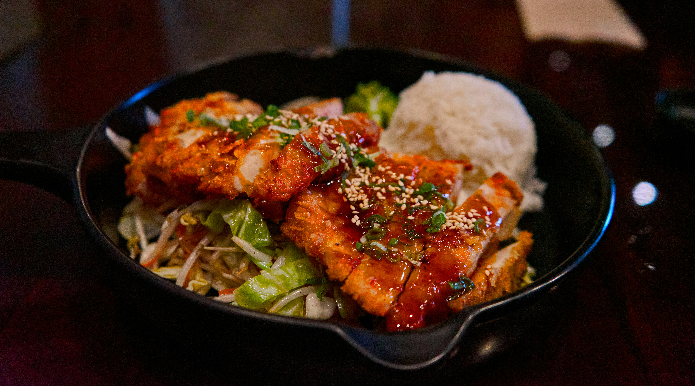

Teriyaki Salmon Bowl
Recipe Description
This teriyaki salmon bowl is a delicious and healthy meal that combines the savory flavors of teriyaki glaze with
fresh salmon and a variety of vegetables. It's perfect for a quick lunch or dinner. Listed below are the
ingredients and instructions to make this tasty teriyaki salmon bowl. Enjoy!
Ingredients
- 1 cup low-sodium soy sauce
- 3 tbsp brown sugar
- 6 tbsp honey
- 2 small cloves garlic, minced
- 2 tbsp chopped fresh ginger
- 2 6-oz salmon fillets
- 1/2 cup grated carrots
-
- 4 radishs, thinly sliced
-
- 2 cups shredded red cabbage
- 2 cups cooked white or brown rice
- 2 green onions, thinly sliced
Steps
- Preheat the oven to 400°F (200°C) and spray a baking sheet with cooking spray.
- Combine soy sauce, brown sugar, garlic and ginger in a bowl. Place the salmon fillets in the prepared baking
dish, skin side down.
- Bake in the preheated oven for 15 minutes, or until the salmon flakes easily with a fork.
- Place rice in a bowl and top with the cooked salmon, shredded cabbage, grated carrots and sliced radishes.
Drizzle with the teriyaki sauce and garnish with sliced green onions.
- Enjoy!

Home